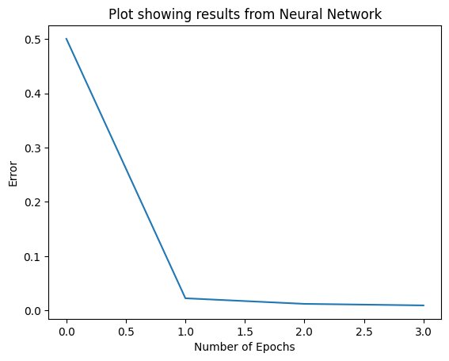

import numpy as npUnit 7 - Artificial Neural Networks
In the unit 7 lecturecast we learnt about the perceptron, a simple neural netowrk for binary classification. Working through relevent python exercises, it was possible to practice assigning input and weight values to a perceptron model, and to observe the effect on the output.
This notebook captures the multi-layer perceptron activity. In this notebook the step function is replaced with the sigmoid activation which, unlike a step function, enables gradient based learning through backpropagation. The sigmoid function however, has the disadvantage that it can become saturated across much of its domain, which makes gradient based learning difficult (Goodfellow et al, 2016). Despite this, sigmoid fuctions can be used to predict binary outputs.
Additional comments made to the original notebook have been indicated by initials ‘SJ’. These notes represent additional information for personal learning, observations and reflections which were made during completion of the exercise.
References
Goodfellow I, Bengio Y and Courville A. (2016) Deep Learning, Cambridge, MA: MIT Press. Available at: https://lccn.loc.gov/2016022992 (Accessed 05 June 2026).
Import Libraries
Define the Sigmoid Function
def sigmoid(sum_func):
return 1 / (1 + np.exp(-sum_func))SJ: The examples below show the output of applying the sigmoid function or np.exp (Eular’s number to the power of -sum_func) on various numbers. It can be seen that the sigmoid function transforms the numbers on to a scale with values between 0 and 1.
sigmoid(0)np.float64(0.5)np.exp(2)np.float64(7.38905609893065)np.exp(1)np.float64(2.718281828459045)sigmoid(40)np.float64(1.0)sigmoid(-20.5)np.float64(1.2501528648238605e-09)Delta output Calculation
# output_layer holds the results of our application of the sigmoid, computed above
output_layerarray([[0.40588573],
[0.43187857],
[0.43678536],
[0.45801216]])SJ: the derivative of the sigmoid function tells us the slope of the function at a particular point and therefore indicates the sensitivitiy of the output of a neuron to changes to the input. A steep slope means that small changes to the input will lead to larger changes in the output.
# derivative_output is our Derivative of the activation function (sigmoid) which we have on the slide
# each row is for each instance of our input dataset
derivative_output = sigmoid_derivative(output_layer)
derivative_outputarray([[0.2411425 ],
[0.24535947],
[0.24600391],
[0.24823702]])error_output_layerarray([[-0.40588573],
[ 0.56812143],
[ 0.56321464],
[-0.45801216]])# Delta output
# each row is for each instance of our input dataset
delta_output = error_output_layer * derivative_output
delta_outputarray([[-0.0978763 ],
[ 0.13939397],
[ 0.138553 ],
[-0.11369557]])Let’s visualize this result
import matplotlib.pyplot as pltplt.xlabel('Number of Epochs')
plt.ylabel('Error')
plt.title('Plot showing results from Neural Network')
plt.plot(error)
plt.show()
#### Comparing the outputs and the predictions
outputsarray([[0],
[1],
[1],
[0]])output_layerarray([[0.00834432],
[0.99342966],
[0.99342916],
[0.00914117]])* We see that our neural network was able to get values close to the actual values from the results.
* This shows that our neural network can handle the complexity of the XOR operator dataset.
- Let us see the updated weights. These are the weights we will require if we want to make future predictions
weights_0array([[ -1.02866066, -12.88016741, 5.85527038],
[ -1.02833672, 5.85954604, -12.86921948]])weights_1array([[-41.59319012],
[ 16.02005006],
[ 16.01754781]])# This function accepts an instance of a dataset
def calculate_output(instance):
#input to hidden layer
hidden_layer = sigmoid(np.dot(instance, weights_0))
#hidden to output layer
output_layer = sigmoid(np.dot(hidden_layer, weights_1))
return output_layer[0]round(calculate_output(np.array([0, 0])))0round(calculate_output(np.array([0, 1])))1round(calculate_output(np.array([1, 0])))1round(calculate_output(np.array([1, 1])))0